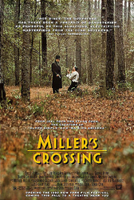
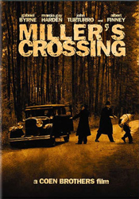
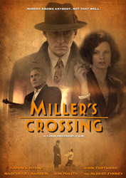
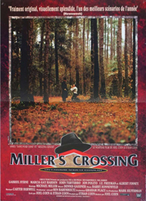
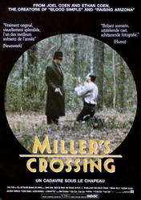

Gabriel Byrne
Olek Krupa
Frances McDormand
Barry Sonnenfeld
Tom Reagan is the right-hand man, and chief adviser, to mob boss, Liam "Leo" O'Bannon. Trouble is brewing between Leo and another mob boss, Johnny Caspar, over the activities of a bookie, Bernie Bernbaum and Leo and Tom are at odds on how to deal with it. Meanwhile, Tom is in a secret relationship with Leo's girlfriend, Verna, who happens to be the sister of Bernie. In trying to resolve the issue, Tom is cast out from Leo's camp and ultimately finds himself stuck in the middle between several deadly, unforgiving parties.
Miller's Crossing quotes many gangster films and films noir. Many situations, characters and dialogue are derived from the work of Dashiell Hammett, particularly his 1931 novel The Glass Key. There are some parallels between the two stories and many scenes and lines are lifted from this novel. The relationship between Tom and Leo in the film mirrors the relationship between the two principal characters of the Hammett novel.
While writing the screenplay, the Coen brothers tentatively titled the film The Bighead - their nickname for Tom Reagan. The first image they conceived was that of a black hat coming to rest in a forest clearing; then, a gust of wind lifts it into the air, sending it flying down an avenue of trees. This image closes the film's opening credit sequence.
Although he was a native Irishman playing a lieutenant to an Irish mobster, the Coens did not originally want Gabriel Byrne to use his own accent in the film. Byrne argued that his dialogue was structured in such a way that it was a good fit for his accent and after he tried it, the Coens agreed; Byrne and Finney used Irish accents in the film. During casting they had envisioned Trey Wilson (who played Nathan Arizona in their previous film Raising Arizona) as gangster boss Liam "Leo" O'Bannon but two days before principal photography began, Wilson died from a brain hemorrhage and Finney was cast. Roger Westcombe calls Finney's portrayal of Leo "perfectly nuanced in a brilliant performance". Finney also appears in drag in a cameo as an elderly female ladies' room attendant.
The Coens cast family and friends in minor roles. Sam Raimi, director and friend of the Coens, appears as the snickering gunman at the siege of the Sons of Erin social club, while Frances McDormand, Joel Coen's wife, appears as the Mayor's secretary. The role of The Swede was written for Peter Stormare but he could not be cast since he was playing Hamlet (a role often referred to as "the Dane"). J. E. Freeman was cast and the name of the character was changed to The Dane, while Stormare went on to be featured in Fargo and The Big Lebowski.
The city in which the story takes place is unidentified but the film was shot in New Orleans as the Coen Brothers were attracted to its look. Ethan Coen commented in an interview, "There are whole neighbourhoods here of nothing but 1929 architecture. New Orleans is sort of a depressed city; it hasn't been gentrified. There's a lot of architecture that hasn't been touched, store-front windows that haven't been replaced in the last sixty years." Principal photography ran from 27 January to 28 April 1989.




